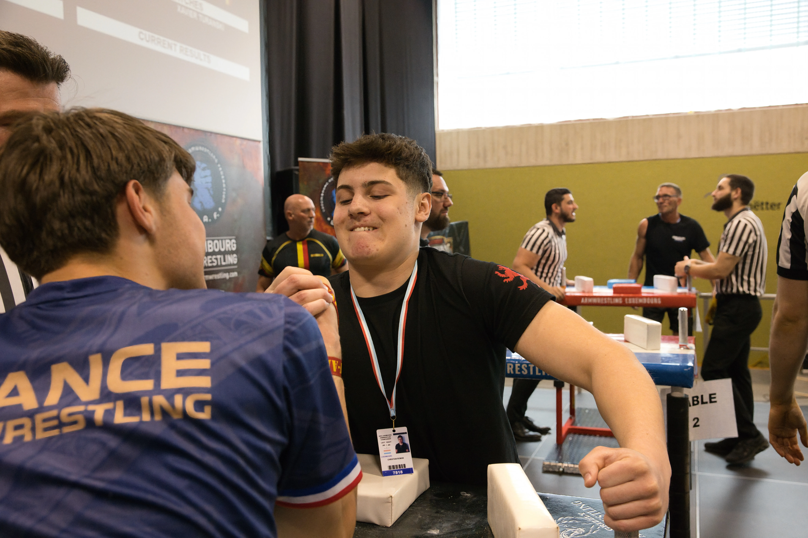
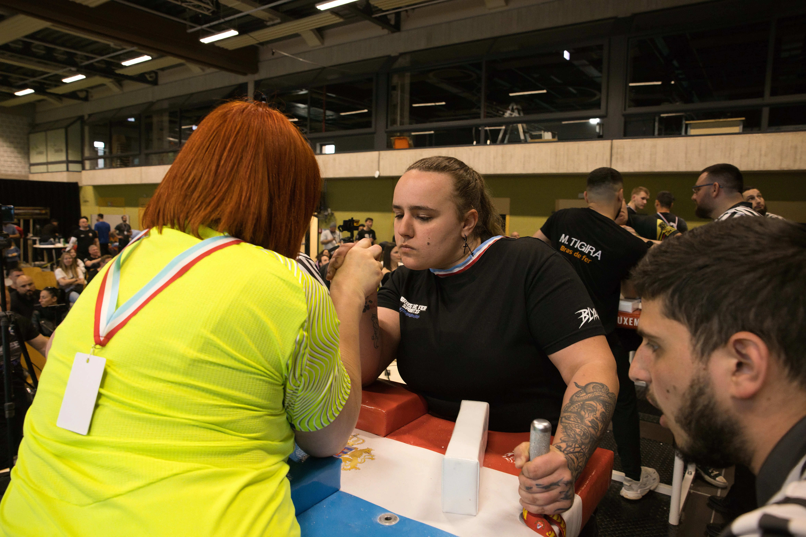

Chaque mardi à 18h au 86 rue des Romains. Tables de compétition WAF, encadrement technique, débutants bienvenus. Première séance gratuite.

L'entraînement du mardi commence à 18h et dure environ 2 heures. Structuré pour convenir autant aux débutants qu'aux pratiquants réguliers qui travaillent leur technique et leur sparring.
Deux heures structurées : échauffement, technique, renforcement, sparring. Chaque mardi, dans le même ordre, pour que le corps et les réflexes s'installent durablement.
Pas besoin de venir tous les jours. Une séance régulière par semaine suffit pour progresser nettement les premiers mois — la constance bat l'intensité dispersée.
L'Armwrestling Club Strassen est équipé de matériel de compétition officiel. Vous n'avez rien à apporter pour votre première séance.
À apporter : une tenue de sport confortable. Rien d'autre. Le club fournit tout le matériel nécessaire, y compris pour la première séance.

Même si vous n'avez jamais fait de bras de fer, la première séance à Strassen vous donnera des bases solides et utilisables immédiatement.
86 rue des Romains, Strassen — 8 min depuis Luxembourg-ville. Aucun équipement requis, tous niveaux bienvenus.
Tout ce qu'il faut savoir avant ta première séance à l'ACS Strassen : technique, sécurité et premiers pas.
Lire l'article →Fracture de l'humérus, positions dangereuses — comment pratiquer en sécurité dès le début.
Lire l'article →Les 3 techniques fondamentales que tu découvriras à l'ACS Strassen dès tes premières séances.
Lire l'article →